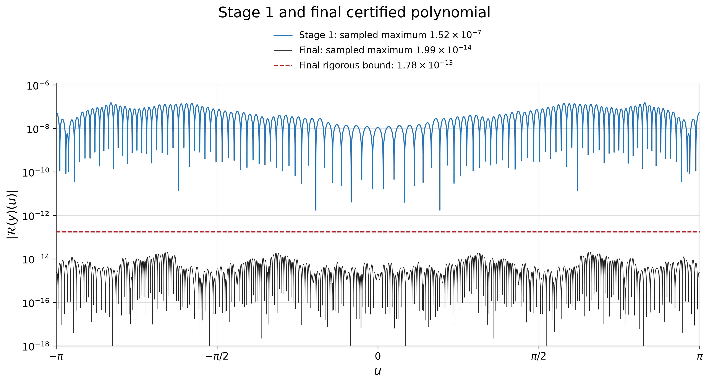
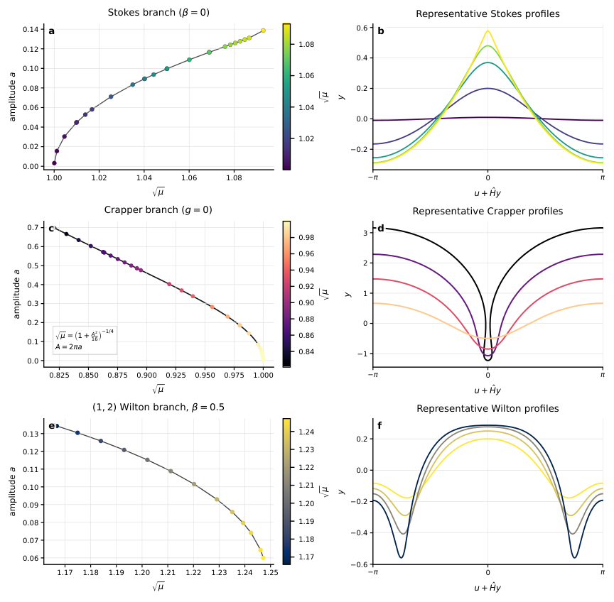
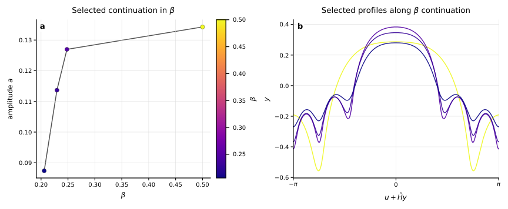

Lean 4 with Mathlib formalizes the certification argument, machine-checking deductions from interval-arithmetic numerical bounds (encoded as rational literals) to the residual theorem.
Abstract
We present a computational framework that combines machine-learning-based discovery with rigorous computer-assisted numerical certification and formal verification for strongly nonlinear partial differential equations. We demonstrate the approach for periodic gravity-capillary traveling water waves. Physics-informed neural networks are used as a search mechanism, with the wave profile, wave speed and, in continuation experiments, surface tension learned directly from the governing equations without training data. Through a staged training and refinement procedure, the neural networks achieve near-machine-precision residuals of the governing equations, even in strongly nonlinear regimes. A single formulation recovers high-amplitude Stokes waves, Crapper waves and Wilton ripples. Continuation from a high-amplitude Wilton ripple in surface tension reveals new high-amplitude candidate solutions. We freeze one candidate as an explicit finite representation and rigorously certify a uniform bound on its governing-equation residual using interval arithmetic, accounting for floating-point roundoff, Fourier truncation, aliasing and grid-to-continuum errors. This independently validates the neural-network accuracy. We formalize the certification argument in Lean, which machine-checks the deductions from certified numerical bounds to the residual theorem. Both the interval certification and formalization were developed with substantial assistance from a large language model, while the validity of the result remains independent of the language model: the numerical bounds are rigorously enclosed by interval arithmetic and the subsequent mathematical deductions are checked by the Lean kernel. Together, these steps provide a pipeline from neural discovery to rigorous numerical certification and machine-checked verification with auditable mathematical guarantees.
Problem
Neural-network PDE solvers can reach very small residuals at sample points, but this gives no rigorous bound on the continuous residual. The question is whether machine-learned solutions of strongly nonlinear gravity-capillary water waves can be turned into rigorously certified, machine-checkable statements.
Approach
Physics-informed neural networks solve the Babenko formulation of periodic traveling water waves, learning the wave profile, wave speed and, in some runs, surface tension. Staged training, Fourier projection and Newton polishing bring residuals near machine precision. One candidate is frozen as a degree-150 cosine polynomial, and Julia/Arb interval arithmetic bounds its uniform residual, accounting for roundoff, truncation, aliasing and grid-to-continuum errors. Lean 4 with Mathlib then machine-checks the deductions from these certified numerical bounds to the final residual theorem, with the interval bounds as the stated trust boundary.

Figure 6: Reduction of the scalar Babenko residual. Absolute residual as a function of the conformal coordinate u for the first-stage neural profile (blue) and the final trigonometric polynomial (black), obtained after successive neural corrections, Fourier projection, and Newton polishing. Both curves evaluate the scalar Babenko equation with the auxiliary fields eliminated, at the physical param
Results
A single formulation recovers Stokes waves, Crapper waves and Wilton ripples, and continuation in surface tension finds new high-amplitude candidate solutions. A uniform residual bound of 1.78e-13 is certified for the N=150 candidate, and the deductions are checked by the Lean kernel. The certificate bounds the residual only and does not by itself prove that an exact solution exists nearby.

Figure 2: Three high-amplitude regimes reproduced by the PINN. a, Pure-gravity Stokes branch with \beta=0 , plotted in the (\sqrt{\mu},a) plane, where a=(\max y-\min y)/(2\pi) . The panel shows the selected Stokes files, including the low-amplitude main-branch runs, that satisfy \max|\mathcal{B}(y_{N})|\leq 10^{-7} , with the grey curve joining the retained runs. b, Five representative retained St

Figure 3: Continuation near a high-amplitude Wilton ripple. a , Selected points on the continuation branch, shown in the amplitude– \beta plane. b , Corresponding free-surface profiles over one period, plotted against the physical horizontal coordinate x(u)=u+\hat{H}y(u) and colored by the same \beta values as in a . The separately displayed degree-150 polynomial in Fig. 5 is the candidate used fo